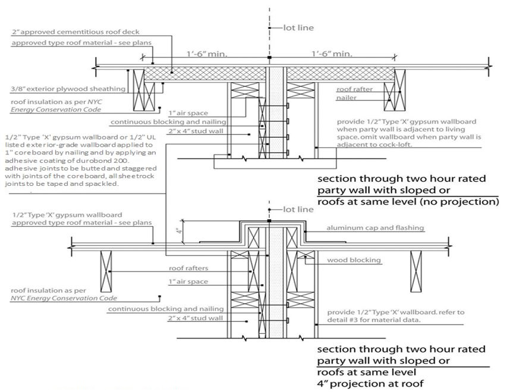
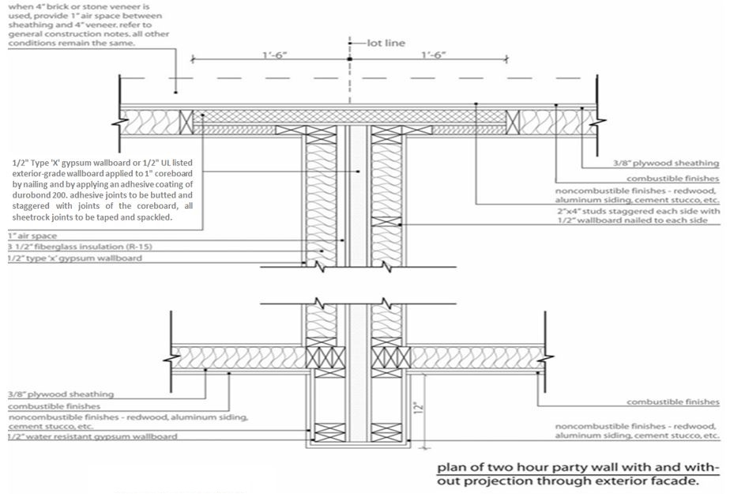

Appendix M: Supplementary Requirements for One- and Two-Family Dwellings
Section BC M101: General
M101.1 General.
The provisions of this appendix contain supplementary requirements for the design and construction of one- and two-family dwellings not more than three stories in height.
Section BC M102: Definitions
M102.1 Definitions.
The following terms are defined in Chapter 2:
DWELLING, ONE-FAMILY.
DWELLING, TWO-FAMILY.
Section BC M103: Fire Wall Separation
M103.1 General.
A fire wall shall be provided between buildings in accordance with Chapter 7. However, attached one- and two-family dwellings of construction Type IIIA, IIIB, VA and VB, where permitted and where each building is not more than three stories in height and not more than 2,100 square feet (195 m
2
) on a story, may be separated by party walls constructed in accordance with the following and as illustrated in Figures M103(1) and M103(2):
1. If there are three or fewer contiguous attached one- or two-family dwellings, such fire wall shall consist of a solid 1-inch (25 mm) Type X gypsum wall board core covered on each side by a 1/2-inch (12.7 mm) exterior-grade Type X gypsum wall board, followed by a 1-inch (25 mm) air gap on one side. Such assembly shall be constructed between two independently supported load-bearing stud walls. See Figure M103(1).
2. If there are in excess of three contiguous attached one- or two-family dwellings, the fire wall shall be made of concrete and masonry, and constructed in accordance with Section 706.
3. Such wall shall be continuous between foundations and roofs.
4. When roof construction on the same level is combustible on both sides of the party wall, the party wall shall extend through the roof construction to a height of at least 4 inches (102 mm) above the high point of the roof framing unless a minimum of 18 inches (457 mm) of non-combustible roof construction is provided on each side of the party wall.
5. Such party wall shall be made smoke-tight at junctions with exterior walls. In buildings of construction Type VA or VB, exterior walls shall be constructed of noncombustible materials for a distance of at least 18 inches (457 mm) on each side of the party wall, or the party wall shall project at least 12 inches (305 mm) through the exterior wall.

Figure M103(1) Party Wall Vertical Section

Figure M103(2) Party Wall Plan Section
(Am. L.L. 2023/077, 6/11/2023, eff. 6/11/2023)
Editor's note: For related unconsolidated provisions, see Appendix A at L.L. 2023/077.